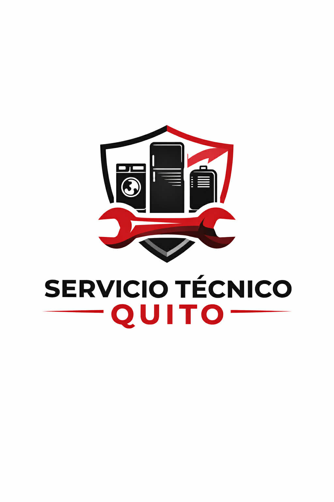
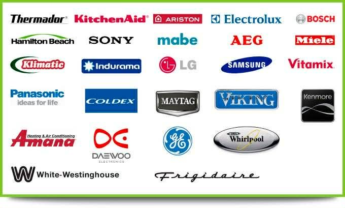
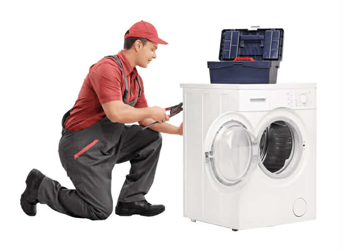
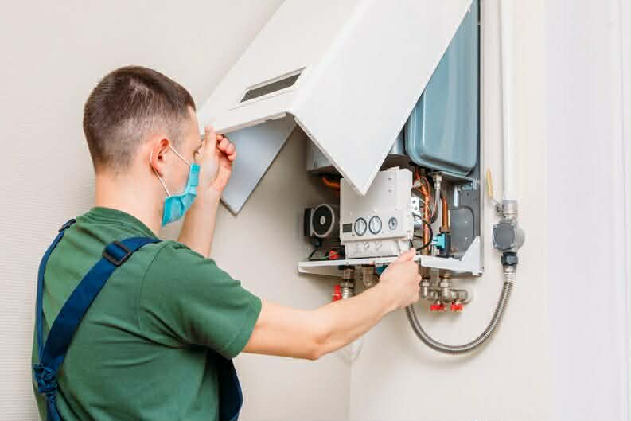
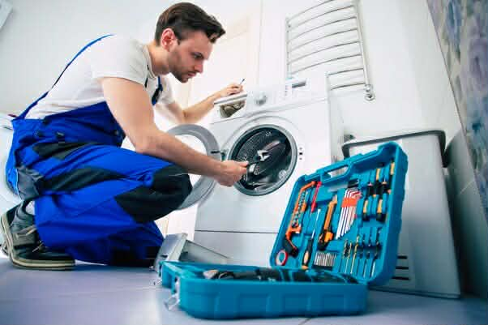
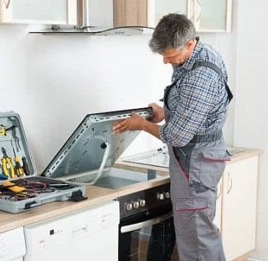
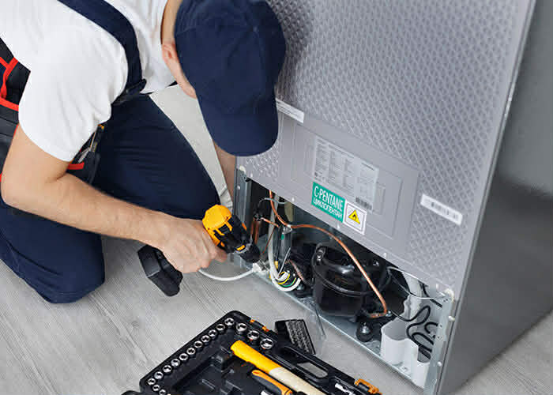

Servicio Técnico QuitoServicio técnico profesional a domicilio

Repuestos originales de todas las marcas:
Whirlpool • Samsung • LG • Mabe • General Electric • Indurama • Teka

Arreglo de lavadoras en Quito
Reparación y mantenimiento profesional de lavadoras con diagnóstico preciso, solución inmediata y garantía para que tu equipo funcione como nuevo desde el primer servicio.
Arreglo de calefones en Quito
Reparación y mantenimiento de calefones a gas y eléctricos con atención rápida, máxima seguridad y técnicos especializados que solucionan el problema de raíz.
Arreglo de secadoras en Quito
Servicio de reparación y mantenimiento de secadoras con soluciones efectivas, ahorro de tiempo y resultados garantizados en la primera visita.
Arreglo de cocinas de inducción en Quito
Reparación y mantenimiento técnico de cocinas de inducción con repuestos originales y mano de obra calificada para máxima durabilidad.
Arreglo de refrigeradoras en Quito
Reparación y mantenimiento de refrigeradoras con diagnóstico exacto, atención urgente y garantía para proteger tus alimentos y tu inversión.